Developed by Daniel Varro, Mathieu Boucher, and Marton Bur.
Sections of the tutorial will continuously be published at this web page.
1. Git Recap
1.1. Git and GitHub
1.1.1. Installing Git
Install the Git version control system (VCS) from https://git-scm.com/downloads.
1.1.2. Logging in to GitHub
-
Create an account on https://github.com/.
-
Verify your e-mail, then log in using your credentials.
1.1.3. Creating a repository on GitHub
-
Visit https://github.com/ then click on New repository (green buttom on the right).
-
Set your user as the owner of the repository.
-
Give a name for the repository (e.g., ecse429-tutorial-1), leave it public, then check Initialize this repository with a README. Click on Create repository afterwards. At this point the remote repository is ready to use.

1.1.4. Cloning to a local repository
-
Open up a terminal (Git bash on Windows).
-
Navigate to the designated target directory (it is typical to use the
gitfolder within the home directory for storing Git repositories, e.g.,cd /home/username/git). -
Using a Git client, clone this repository to your local Git repository. First, get the repository URL (use HTTPS for now).

Then, issuegit clone https://url/of/the/repository.git
You should get an output similar to this:

-
Verify the contents of the working copy of the repository by
ls -la ./repo-name. The .git folder holds version information and history for the repository.
1.1.5. Git basics
-
Open up a terminal and configure username and email address. These are needed to identify the author of the different changes.


Glossary — Part 1:-
Git is your version control software
-
GitHub hosts your repositories
-
A repository is a collection of files and their history
-
A commit is a saved state of the repository
-
-
Enter the working directory, then check the history by issuing
git log. Example output:

-
Adding and commiting a file: use the
git addandgit commitcommands.
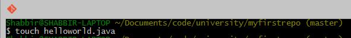 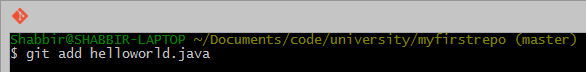
The effect of these commands are explained on the figure below:

Glossary — Part 2:-
Working Directory: files being worked on right now
-
Staging area: files ready to be committed
-
Repository: A collection of commits
-
-
Checking current status is done with
git status.

-
Staging and unstaging files: use
git resetto remove files from the staging area.


Important: only staged files will be commited.

-
To display detailed changes in unstaged files use
git diff, while usegit diff --stagedto show changes within files staged for commit.

-
Reverting to a previous version is done using
git checkout.

-
The commands
git pull(or thegit fetch+git rebasecombination) andgit pushare used to synchronize local and remote repositories.
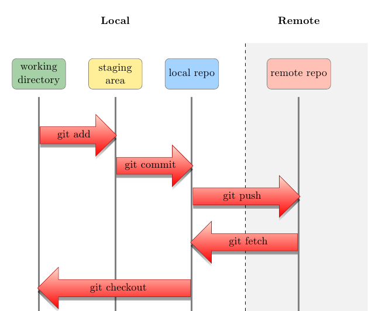
1.1.6. Browsing commit history on GitHub
-
You can browse pushed commits in the remote repository online using GitHub. You can select the commits menu for a repository.
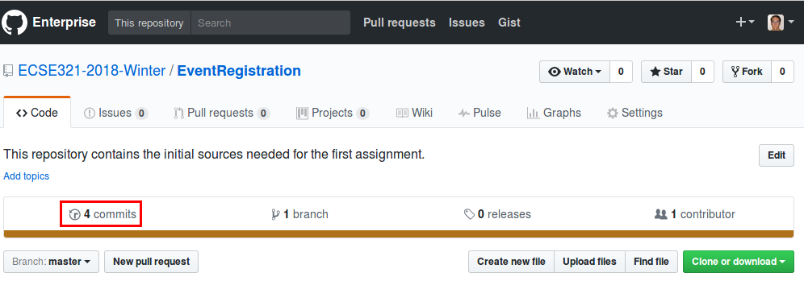
To get a link for a specific commit, click on the button with the first few characters of the hash of the commit.

1.1.7. Linux commands cheat sheet:
-
cd: change/navigate directory -
ls: list contents of a directory -
ls -la: list all contents of a directory in long listing format -
touch: create a file -
cp: copy a file -
mv: move a file -
rm: remove a file -
mkdir: create a directory -
cp -r: copy a directory recursively with its contents -
rmdir: remove a directory -
rm -rf: force to recursively delete a directory (or file) and all its contents -
cat: concatenate and print contents of files -
nano: an easy-to-use text editor
The source for most of the images in the Git documentation: https://github.com/shabbir-hussain/ecse321tutorials/blob/master/01-githubTutorial1.pptx
1.2. Travis CI
-
Go to https://travis-ci.com/, click on Sign up with GitHub.
-
Click on the green authorize button at the bottom of the page.
-
Activate Travis-CI on your GitHub account
-
Select the repositories you want to build with Travis (make sure to include your repository that you created for this tutorial). You can modify this setting anytime later as well.
-
In your working copy of your repository, create a small Maven project with Spring Boot.
-
Make sure you have Maven 3 installed (
mvn --version). -
Create the
src/main/java/Main.javafile with the contentimport org.springframework.boot.autoconfigure.EnableAutoConfiguration; import org.springframework.boot.SpringApplication; import org.springframework.context.annotation.Configuration; import org.springframework.web.bind.annotation.RestController; import org.springframework.web.bind.annotation.RequestMapping; @Configuration @EnableAutoConfiguration @RestController public class Main { public static void main(String[] args) { SpringApplication.run(Main.class, args); } @RequestMapping("/") public String greeting(){ return "Hello world!"; } } -
Create a
pom.xmlin the root of the working copy.<?xml version="1.0" encoding="UTF-8"?> <project xmlns:xsi="http://www.w3.org/2001/XMLSchema-instance" xmlns="http://maven.apache.org/POM/4.0.0" xsi:schemaLocation="http://maven.apache.org/POM/4.0.0 http://maven.apache.org/maven-v4_0_0.xsd"> <modelVersion>4.0.0</modelVersion> <groupId>ca.mcgill.ecse429</groupId> <artifactId>tutorial1</artifactId> <version>1.0</version> <parent> <groupId>org.springframework.boot</groupId> <artifactId>spring-boot-starter-parent</artifactId> <version>2.0.4.RELEASE</version> <relativePath/> </parent> <name>tutorial1</name> <properties> <java.version>1.8</java.version> </properties> <dependencies> <dependency> <groupId>org.springframework.boot</groupId> <artifactId>spring-boot-starter-web</artifactId> </dependency> </dependencies> <build> <plugins> <plugin> <groupId>org.springframework.boot</groupId> <artifactId>spring-boot-maven-plugin</artifactId> <executions> <execution> <goals> <goal>build-info</goal> </goals> <configuration> <additionalProperties> <java.source>${maven.compiler.source}</java.source> <java.target>${maven.compiler.target}</java.target> </additionalProperties> </configuration> </execution> </executions> </plugin> </plugins> </build> </project> -
Add a
.gitignoreto ignore generated resources by Git:*.class target/ -
Make sure your application is compiling by running
mvn clean install
-
-
Create a file called
.travis.yml:language: java script: - mvn clean install -
Commit and push your work. If everything is set up correctly, the build should trigger and Travis should run your build using Maven.
2. Code Reviews
2.1. GitHub Code Reviews
-
Navigate to the folder for the working copy of your ecse429-tutorial1 from the previous tutorial.
-
Create & checkout a new branch named called
documentation. (git branch documentation && git checkout documentation) -
Edit
README.md.
# ecse429-tutorial1
A default java project generated by Maven.-
Commit your changes and push this
documentationbranch. (git add . && git commit -m "Adding brief project description" && git push) -
Open the main page for the repository on Github. Click on the green button in the upper right corner to open a pull request.

-
Study the possible settings, then create the pull request.
-
On the next page, click on Files changed. Place a comment in the updated file and start a review.

-
Normally, the owner and the reviewer are two different participants, and GitHub offers more options when completing a review: approve changes or request changes. This time simply click on Finish review and Comment.
-
Merge the pull request. Delete the branch afterwards.
2.2. Gerrit Code Reviews
-
Go to http://gerrithub.io/, click on First time Sign In.
-
Authenticate with GitHub, then select the repositories you want to replicate with Gerrit. It is best to select the the public [your GitHub user]/ecse429-tutorial1 repository created previously to follow the steps of this tutorial.
NoteYou can select repositories to replicate anytime by navigating to gerrithub.io > Open Gerrit Code Review > GitHub (in the top menubar) > Repositories -
Create a GerritHub password for HTTP access. Go to your profile (upper right corner) > Settings > HTTP Password, then click on Generate password. Make sure to save it somewhere, otherwise you need to generate it again next time.
-
Click on Projects > List, then search for your repository.

-
Select your project named after your repository, then set the settings below and click on Save Changes.
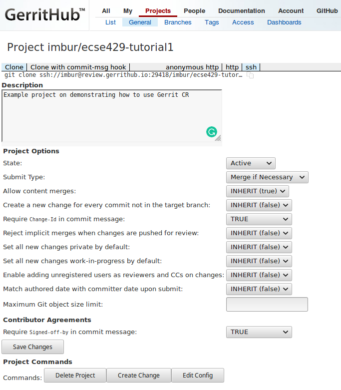 -
Copy the command from the
git clonecommand shown above the Description text box after changing to Clone with commit-msg hook and http.NoteMake sure you are issuing the git clonecommand in a folder that is not part of any git repository working copy in your file system. (In other words, you should do it in your~/gitfolder or the like.) Note
NoteOptionally, if you have SSH key installed to GitHub, you can import it to GerritHub and use that for authentication. -
Paste the command to the terminal. Enter your generated password when prompted.
2.2.1. Making a Change with Gerrit
-
Navigate to the repository. Edit the
.travis.ymlfile:language: java install: true script: - cd tutorial1 - mvn clean install -
Add, commit and push the changes. (One-liner:
git add . && git commit -m "Making Travis skip the install step" && git push) -
Observe the created commit message with
git log. Observe the changes synced to GitHub, too. -
Create a new change to the code, remove the recently added
install: trueline from.travis.ymland create a new commit. Do not push it yet! -
Issue
git push origin HEAD:refs/for/master. The outputs should show that a new Gerrit change is created.Counting objects: 3, done. Delta compression using up to 8 threads. Compressing objects: 100% (3/3), done. Writing objects: 100% (3/3), 1.01 KiB | 0 bytes/s, done. Total 3 (delta 1), reused 0 (delta 0) remote: Resolving deltas: 100% (1/1) remote: Processing changes: new: 1, done remote: remote: New Changes: remote: https://review.gerrithub.io/#/c/imbur/ecse429-tutorial1/+/425671 Removing no-op install step from travis conf remote: To https://imbur@review.gerrithub.io/a/imbur/ecse429-tutorial1 * [new branch] HEAD -> refs/for/master -
Navigate to your GerritHub dashboard. Observe the changes there.
 Note
NoteGitHub does not sync Gerrit changes, since they are pushed to a gerrit-specific branch ( refs/for/[branchname]).
2.2.2. Review and Manage a Change with Gerrit
-
Click on the change and explore the options on the web interface.

-
Comment on the
.travis.ymlfile within the change suggesting that JDK8 should be used with the project.

-
The comment will remain a draft up to the point until you submit your review. Click on the Reply… button on the overview page for the change.

-
Implement the modifications.
language: java jdk: - oraclejdk8 script: - cd tutorial1 - mvn clean install -
Append these modifications to the change
> git add . > git commit --amend > git push origin HEAD:refs/for/masterCautionIt is very important to add that in git amending a pushed commit is a history-rewriting operation, that is in most cases to be avoided. However, Gerrit follows these changes by amending a previous commit that holds the previous version of the change. -
Observe the new patch set online.

-
Approve and verify the change.

-
Submit the changes to the
masterbranch.
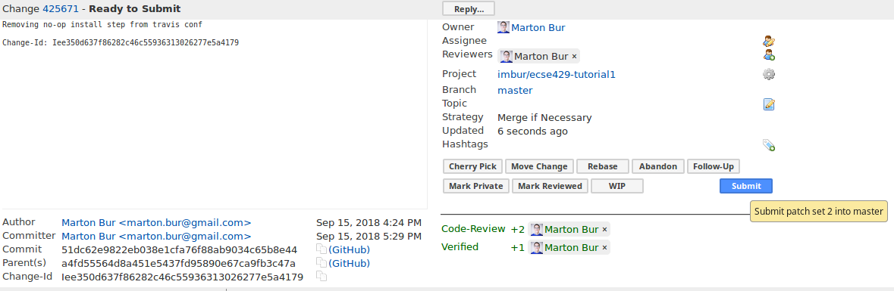 -
Soon the commit becomes visible in GitHub as well. Make sure to pull afterwards to update your local branches.
3. Unit Testing Frameworks
This material is included in two public tutorials:
-
AssertJ: http://www.vogella.com/tutorials/AssertJ/article.html (Sections 1-6)
-
JUnit5: http://www.vogella.com/tutorials/JUnit/article.html#junit5 (Sections 10-11)
4. Static Analysis
4.1. Prerequisites
This tutorial assumes that you have maven version 3.x.x installed on your computer. To create a new, default, maven project, simply type the command mvn -B archetype:generate -DarchetypeGroupId=org.apache.maven.archetypes -DgroupId=com.mcgill.ca.tutorial3 -DartifactId=tutorial3 in the folder of your choice.
Next we will update the JUnit dependencies. Locate your pom.xml file that was created after the above command. The default generated pom.xml should look something like:
<project xmlns="http://maven.apache.org/POM/4.0.0" xmlns:xsi="http://www.w3.org/2001/XMLSchema-instance"
xsi:schemaLocation="http://maven.apache.org/POM/4.0.0 http://maven.apache.org/maven-v4_0_0.xsd">
<modelVersion>4.0.0</modelVersion>
<groupId>com.mcgill.ca</groupId>
<artifactId>tutorial3</artifactId>
<packaging>jar</packaging>
<version>1.0-SNAPSHOT</version>
<name>tutorial-3</name>
<url>http://maven.apache.org</url>
<dependencies>
<dependency>
<groupId>junit</groupId>
<artifactId>junit</artifactId>
<version>3.8.1</version>
<scope>test</scope>
</dependency>
</dependencies>
</project>Change the version number for JUnit from 3.8.1 to 4.12 and remove the <scope>test</scope> tag.
Change the AppTest.java class definition to a single empty test:
package com.mcgill.ca.tutorial3;
import org.junit.Test;
public class AppTest
{
@Test
public void emptyTest() {
}
}Finally, to make sure everything is working correctly, run the command mvn clean install and check that the build succeeded.
No git repository is created for this project. If you already have a repository containing this project and wish to use that one, ignore the steps having the (Optional) tag
This default project will be used in the next sections.
4.2. SonarQube Static Code Analysis
This section looks at how to use SonarQube, both integrated with Travis and as a standalone setup.
4.2.1. Offline SonarQube Installation
-
Navigate to the folder of the working copy of your repository used during the previous tutorial. If you no longer keep a working copy, clone it again.
-
Go to the SonarQube main page (https://www.sonarqube.org/) and click on the blue Download button.
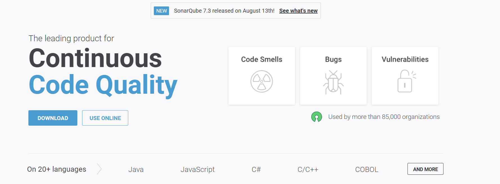 -
Click on the blue Community Edition 7.3 button

-
Extract the sonarqube-7.3.zip to the location of your choice.
For this tutorial, we unzipped it in C:\ -
Start the SonarQube Server.
Assuming you are in the root folder of the sonarqube directory, that isC:\sonarqube-7.3this example, you run either:
.\bin\[OS]\StartSonar.batfor windows or./bin/[OS]/sonar.sh consolefor linux or mac environments.
The OSs that are included are:-
windows-x86-32
-
windows-x86-64
-
macosx-universal-64
-
linux-x86-32
-
linux-x86-64
In this example, we have a Windows machine, so we use.\bin\windows-x86-64\StartSonar.batas a command. The server should boot and when it is finally ready, you should get an output similar to this
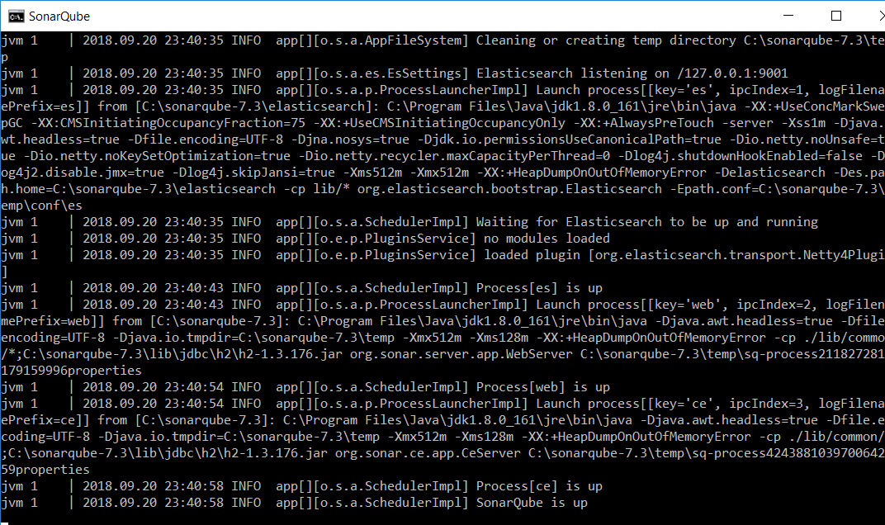
SonarQube created a default webserver at localhost:9000. If you type the latter in your Internet browser, you should get the following page
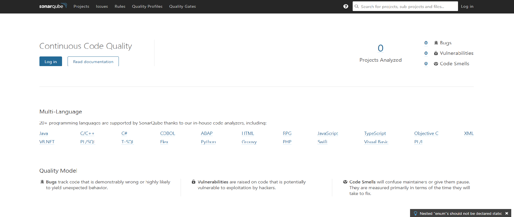
-
-
Log in the server
The default account created for your page is admin:admin

-
Create Basic Code Smells in the Project
Locate the fileApp.javain your maven project and change the class definition to the following:
package ca.mcgill.ecse429;
public class App
{
private int x;
public static void main( String[] args )
{
String s = null;
System.out.println(s.length());
}
}8 Edit the pom.xml
Add the Sonar Maven plugin and its configuration to the project (e.g., after the </dependencies> closing tag)
...
<build>
<plugins>
<plugin>
<groupId>org.sonarsource.scanner.maven</groupId>
<artifactId>sonar-maven-plugin</artifactId>
<version>3.5.0.1254</version>
</plugin>
</plugins>
</build>
<profiles>
<profile>
<id>sonar</id>
<activation>
<activeByDefault>true</activeByDefault>
</activation>
<properties>
<!-- Optional URL to server. Default value is http://localhost:9000 -->
<sonar.host.url>
http://localhost:9000
</sonar.host.url>
</properties>
</profile>
</profiles>
...+
|
Note
|
For gradle 2.1 and above, add the following snippet to the build script: |
plugins {
id "org.sonarqube" version "2.6.2"
}+
Then, you can run analysis using gradle sonarqube
9 Build the Project
In another terminal, run the command mvn clean install sonar:sonar at the root of the project folder
You should get an output similar to this:

If we visit the link in the terminal output (it follows the format of http://localhost:9000/dashboard?id=<INSERT_PROJECT_NAME>), we are brought to a page similar to this:

10 Investigate the Error Causes:
Click on Code in the toolbar above. Then select the package containing the App.java class from the list and click on App.java and click on the red icons on the left of your code.
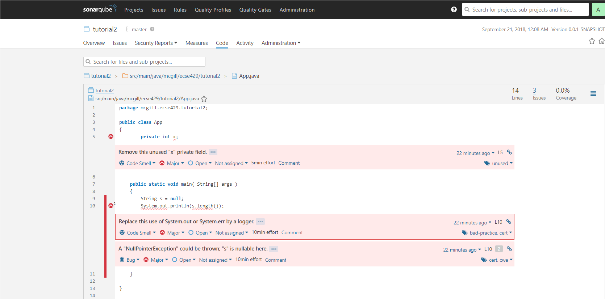
Adding Code Coverage
-
Edit the
pom.xmland add a newprofilesomewhere between the<profiles>tags<profile> <id>sonar-coverage</id> <activation> <activeByDefault>true</activeByDefault> </activation> <build> <pluginManagement> <plugins> <plugin> <groupId>org.jacoco</groupId> <artifactId>jacoco-maven-plugin</artifactId> <version>0.7.8</version> </plugin> </plugins> </pluginManagement> <plugins> <plugin> <groupId>org.jacoco</groupId> <artifactId>jacoco-maven-plugin</artifactId> <configuration> <append>true</append> </configuration> <executions> <execution> <id>agent-for-ut</id> <goals> <goal>prepare-agent</goal> </goals> </execution> <execution> <id>jacoco-site</id> <phase>verify</phase> <goals> <goal>report</goal> </goals> </execution> </executions> </plugin> </plugins> </build> </profile> -
Write a Dummy Test
In AppTest.java, substitute emptyTest with the following:
@Test
public void mainTest() {
App.main(null);
}3 Run the command mvn clean install sonar:sonar once again
4 Use the outputted URL to inspect the changes in SonarQube
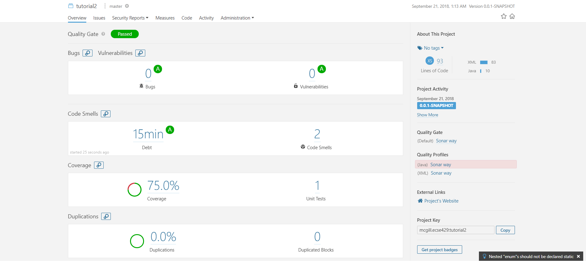
5 Click on the 75% of the Code Coverage Section
6 Click on the App.java file in the list
7 Look to the left of the red error icons. We now see which lines were tested by the unit tests.

4.2.2. SonarQube Integrated With Travis
-
Register your Github Account in this link (https://sonarcloud.io/sessions/new?return_to=%2Faccount%2Fsecurity)
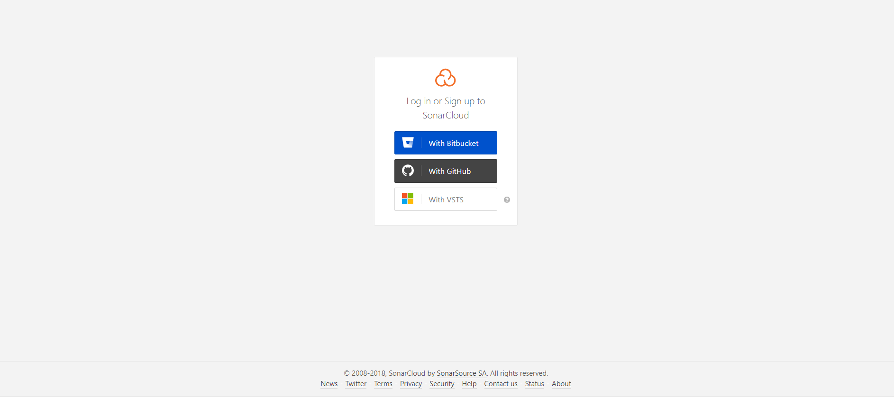
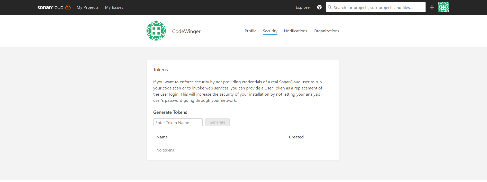 -
Add a security token of your choice and store in a file of your choice
NoteIt is important to copy it somewhere; you will not be able to see it again afterwards

-
Click on your picture in the top right-hand side of the toolbar, next to the search bar, then on the button My Organizations
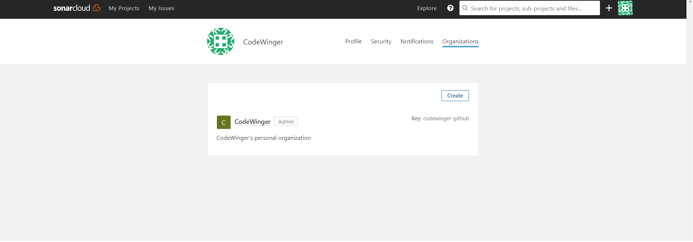 -
Jot down the key given by SonarCloud.io under the Create button
-
Add a
.travis.ymlfile to the project’s directory
language: java
sudo: false
install: true
addons:
sonarcloud:
organization: "[YOUR ORGANIZATION KEY]"
token:
secure: "[YOUR GENERATED TOKEN]"
jdk:
- oraclejdk8
script:
- mvn clean org.jacoco:jacoco-maven-plugin:prepare-agent package sonar:sonar
cache:
directories:
- '$HOME/.m2/repository'
- '$HOME/.sonar/cache'
For this example, the addons section would look like
addons:
sonarcloud:
organization: "codewinger-github"
token:
secure: "3910246b05e26646a6c26ab025f3bd6140b9e3a4"6 Create a new local repository with the command git init (Optional)
7 Create a new upstream repository on GitHub (Optional)
After creating the repository, from the command line enter the commands:
git remote add origin https://github.com/[YOUR GITHUB ID]/[YOUR REPO NAME].gitIn my case, the above would look like:
git remote add origin https://github.com/CodeWinger/tutorial3.git8 Add a .gitignore file (Optional)
# Compiled class file
*.class
# Log file
*.log
# BlueJ files
*.ctxt
# Mobile Tools for Java (J2ME)
.mtj.tmp/
# Package Files #
*.jar
*.war
*.nar
*.ear
*.zip
*.tar.gz
*.rar
# virtual machine crash logs, see http://www.java.com/en/download/help/error_hotspot.xml
hs_err_pid*9 Push your work from the master branch to GitHub with the command git add . && git commit -m "SonarCloud Integration" & git push origin master:master --set-upstream
We need to first analyze the main branch before we can analyze new branches along with their differences with the master branch
Your output should look something like this:

10 Copy the outputted URL (https://sonarcloud.io/dashboard?id=mcgill.ecse429%3Atutorial2, in this case) and paste it in your Internet browser.

11 From the master branch, create and checkout a new branch git branch sonarqube-travis-integration && git checkout sonarqube-travis-integration
12 Modify `App.java’s class definition:
public class App
{
public static void main( String[] args )
{
if (args == null || args.length == 0) {
System.out.println("no input");
return;
}
for (String argument : args) {
System.out.println(argument);
}
}
}13 Modify `AppTest.java’s class definition:
import org.junit.Test;
public class AppTest
{
@Test
public void testMainMethodForNull() {
App.main(null);
}
@Test
public void testMainMethodForEmptyArray() {
App.main(new String[0]);
}
@Test
public void testMainMethodForNonEmptyArray() {
String[] args = {"Hello", "World"};
App.main(args);
}
}14 Push your work on the branch and check the output in SonarCloud.io (git add . && git commit -m "SonarCloud Integration" & git push -u origin sonarqube-travis-integration

4.3. SonarCloud integration for Project deliverable
-
One team member is registered to SonarCloud organization McGill ECSE429 Fall2018. Follow the steps with that team member’s SonarCloud account.
-
Create a SonarCloud project under the organization (and not under your user). Name it
team-NO-blokish, whereNOis the placeholder for the two digit team number. Assign a unique project key to it afterwards as shown below.
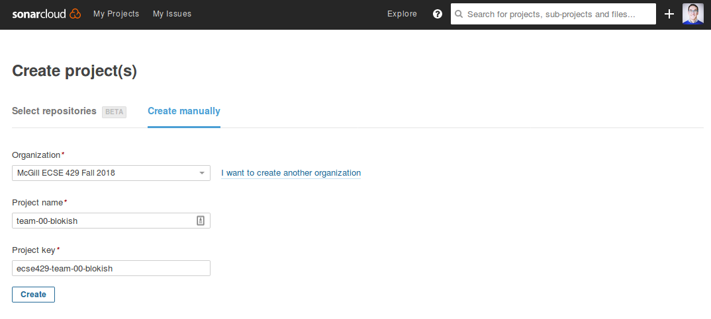 -
Generate an access token for the project. 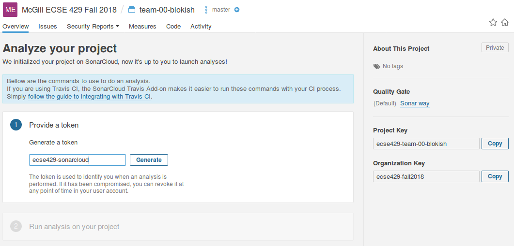
-
On the next page, you will be shown two snippets:
-
one is to be added to the
build.gradlefile -
the other one is the command you can use out-of-the box to build and analyze on SonarCloud 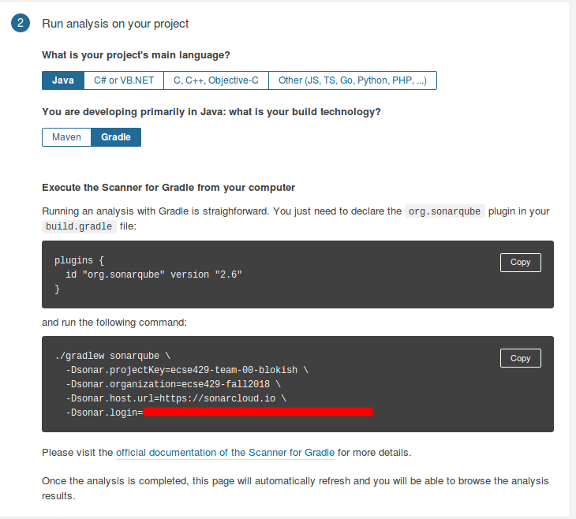
-
4.4. Infer Static Analyzer
-
Create and checkout a new branch from master (
git branch infer && git checkout infer) -
Edit the .travis.yml file:
dist: trusty sudo: required language: java jdk: oraclejdk7 script: - #TODO: get infer archive and extract it - #TODO: add infer executable to the path - #TODO: invoke infer with your project -
Introduce a null warning In the default file
App.java, change the main method to the following:public static void main( String[] args ) { String s = null; System.out.println(s.length()); } -
Commit and push the 2 modified files (
commit add . && git commit -m "Added Infer Static Analyzer" && git push -u origin infer) -
Go to https://travis-ci.com/ to see your build processes. It should look something similar to this:
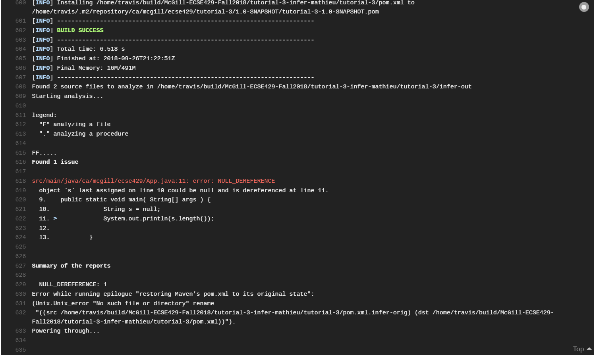
5. Test Generation and Code Coverage
5.1. EvoSuite Installation and Initial Project Setup
|
Note
|
For this session, we are reusing a sligthly modified version of the example project available here. |
-
Download EvoSuite Commandline tool from http://www.evosuite.org/downloads/
ImportantEvoSuite is not compatible yet with Java 9 and above. -
Fork the ecse429-tutorial-5 repository under your GitHub user.
ImportantAfter creating your fork, it is important to apply the steps below to your own fork (and not on the organization’s repository). -
Go to https://travis-ci.com/account/repositories and make sure you see the fork on Travis. If not, synchronize with GitHub.
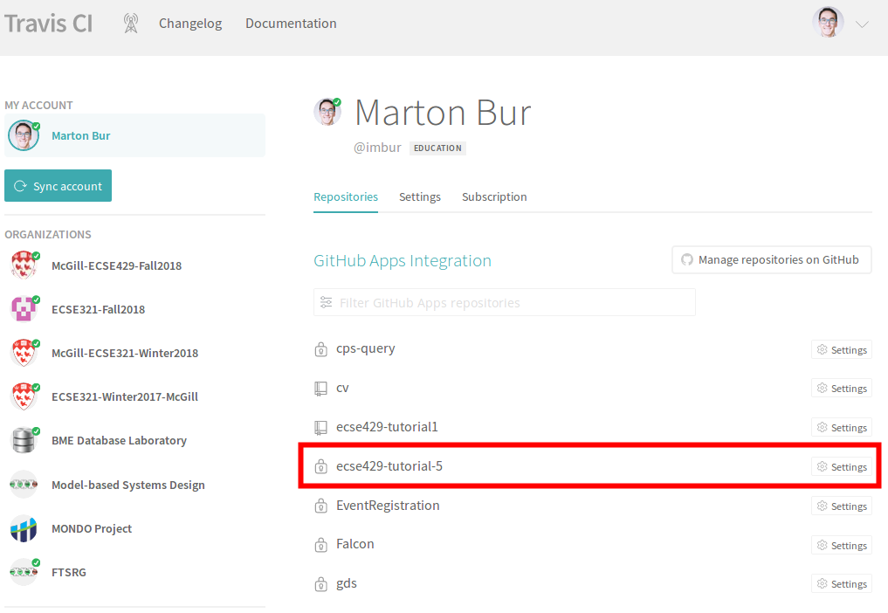 -
Click on Settings with the cogs icon next to the repository’s name. Under More options > Settings Set the value of the
SONAR_TOKENenvironment variable (the value is the token obtained from sonarcloud.io earlier) for your fork’s build.
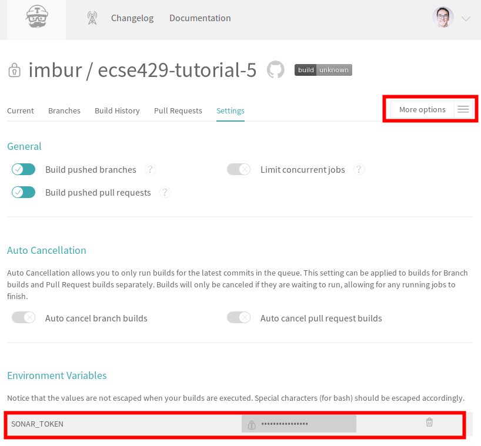 -
Clone your fork of the repository to your computer.
-
Replace both
project.keyandproject.nameproperties in.travis.ymlwithecse429-tutorial-5-YOUR_GITHUB_USERNAME. Commit and push your changes afterwards and see your project automatically built on Travis-CI and analyzed on SonarCloud.
5.2. Generating Tests using EvoSuite
|
Note
|
In the following steps, we assume that the EVOSUITE environment variable points to the evosuite.jar executable, and the program can be started by issuing java -jar $EVOSUITE. For Windows: in the default Windows command line tool this would be java -jar %EVOSUITE%, while also make sure that the firewall settings allow EvoSuite to run.
|
-
Navigate to the folder where your working copy of your tutorial 5 repository is located.
-
Explore the project sources.
-
Build the project locally using
./gradlew buildto generate classfiles. -
You can run the app with
./gradlew run. -
Go to the folder
simple/and generate tests for the classSimpleStaticSutjava -jar $EVOSUITE -class com.github.cseppento.gradle.evosuite.testprojects.simple.SimpleStaticSut -projectCP build/classes/java/main/ -Duse_separate_classloader=false -
Explore the switches for EvoSuite with
java -jar $EVOSUITE -help! Also observe the output ofjava -jar $EVOSUITE -listParameters! -
Go to (or stay in) the folder
simple/and generate tests for the classSimpleObjectSutwith Branch coverage and also print the all test goals as well as the missed goals.java -jar $EVOSUITE -class com.github.cseppento.gradle.evosuite.testprojects.simple.SimpleObjectSut -projectCP build/classes/java/main/ -Duse_separate_classloader=false -criterion BRANCH -Dprint_goals=true -Dprint_missed_goals -
Try other settings according to EvoSuite documentation to generate tests for the
SimpleObjectSutclass!
5.3. Adding the Generated Tests to the Build
-
Tests are generated under
simple/evosuite-tests. We need to add them to the build. -
First, add EvoSuite runtime to project dependencies to
simple/simple-deps.gradle:implementation 'org.evosuite:evosuite-standalone-runtime:1.0.6' -
Modify the test sources list in
simple/simple-app.gradleby adding the following lines to the end of the file:sourceSets { test { java { srcDirs = ['./src/test/java' ,'./evosuite-tests'] } } } -
Commit your tests and make sure they are executed by Gradle.
NoteYou might encounter build failure if you have use_separate_classloader=falseset in EvoSuite test cases. If this is the case, switch it back touse_separate_classloader=true.
5.4. Measuring Code Coverage with Android Studio
-
Select a single test class or multiple tests classes, then open the right click menu to run them with coverage
-
Android Studio will show the coverage report after running the test. It also highlights which lines were executed by at least one of the test cases
-
You can also export and view coverage results using the button shown below
5.5. Cleaning Up the Project
IMPORTANT: At the end of the tutorial, turn off the build on Travis-CI and delete the project in SonarCloud as shown below, so that this demo project is not taking up the allowed line count on SonarCloud
Travis:

SonarCloud:

6. Mutation Testing
6.1. Mutation Testing Using PIT
This tutorial covers the basics of using PIT (link:http://pitest.org/), both as part of a build using Gradle and using an Eclipse plugin.
|
Note
|
For this tutorial, we assume that you the Gradle Eclipse plugin installed on your computer. We will create a Gradle project from scratch and be testing the method from the fourth question of your first assignment returnAverage(int[], int, int, int) . |
-
Create a new Gradle project in Eclipse by clicking on File > New > Other

-
Under Gradle, choose Gradle Project

-
Click on Next, Next, then name your project tutorial6, click on Finish
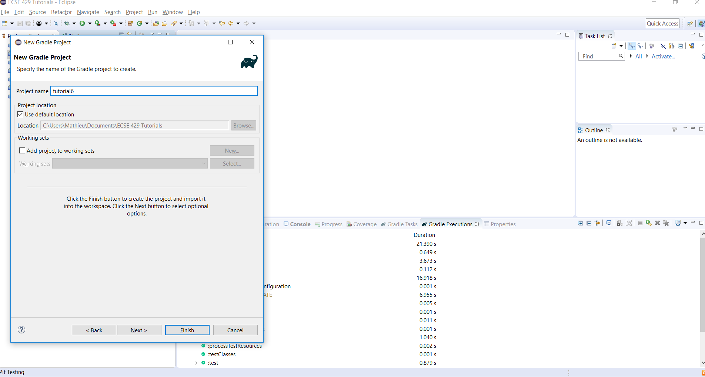NoteThe project may take some time to be created. -
Create a new package instead of the default ones for both the source and test folders (e.g
com.mcgill.ecse429.tutorial6) and move the default generated classes (LibraryandLibraryTest) to this package.

-
Change the code in the
Libraryclasspackage com.mcgill.ecse429.tutorial6; public class Library { public static double returnAverage(int value[], int arraySize, int MIN, int MAX) { int index, ti, tv, sum; double average; index = 0; ti = 0; tv = 0; sum = 0; while (ti < arraySize && value[index] != -999) { ti++; if (value[index] >= MIN && value[index] <= MAX) { tv++; sum += value[index]; } index++; } if (tv > 0) average = (double) sum / tv; else average = (double) -999; return average; } } -
Change the code in the
LibraryTestclasspackage com.mcgill.ecse429.tutorial6; import static org.junit.Assert.assertEquals; import org.junit.Test; public class LibraryTest { @Test public void allBranchCoverageMinimumTestCaseForReturnAverageTest1() { int[] value = {5, 25, 15, -999}; int AS = 4; int min = 10; int max = 20; double average = Library.returnAverage(value, AS, min, max); assertEquals(15, average, 0.1); } @Test public void allBranchCoverageMinimumTestCaseForReturnAverageTest2() { int[] value = {}; int AS = 0; int min = 10; int max = 20; double average = Library.returnAverage(value, AS, min, max); assertEquals(-999.0, average, 0.1); } } -
Run the Test in coverage mode using Eclemma.

-
Verify that we have 100% branch coverage.
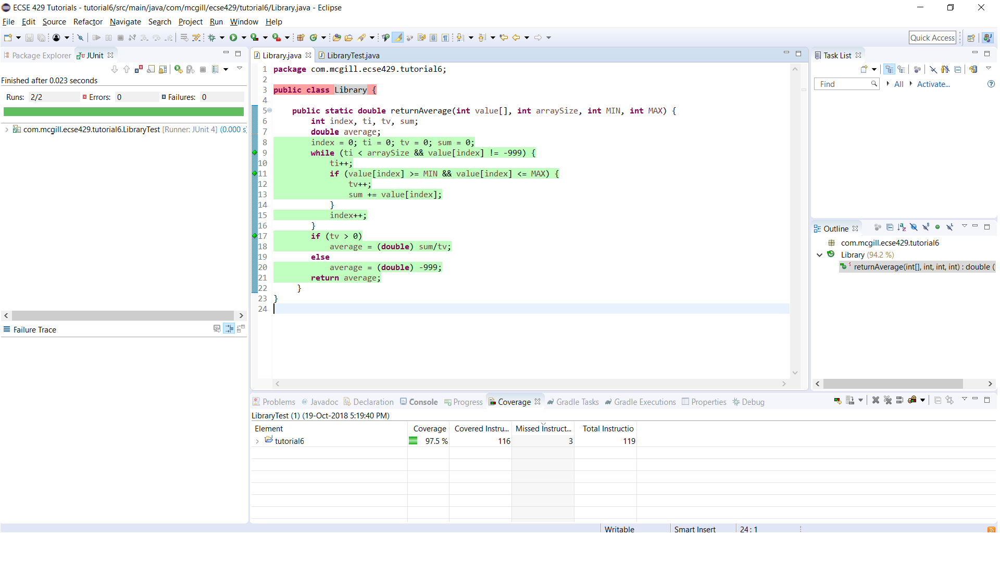
6.2. Using Gradle with PIT testing
-
Modify the
build.gradlefile to include the pitest pluginapply plugin: 'java' apply plugin: 'java-library' sourceCompatibility = JavaVersion.VERSION_1_8 buildscript { repositories { jcenter() } dependencies { classpath 'info.solidsoft.gradle.pitest:gradle-pitest-plugin:1.3.0' } } repositories { jcenter() } dependencies { testCompile "junit:junit:4.12" compile "args4j:args4j:2.0.21" compile "org.codehaus.groovy:groovy-all:2.3.7" } apply plugin: 'info.solidsoft.pitest' pitest { targetClasses = ["com.mcgill.ecse429.tutorial6*"] timestampedReports = true } -
Navigate to the project folder and run the command
gradle build pitest(you can also use the Gradle wrapper script)
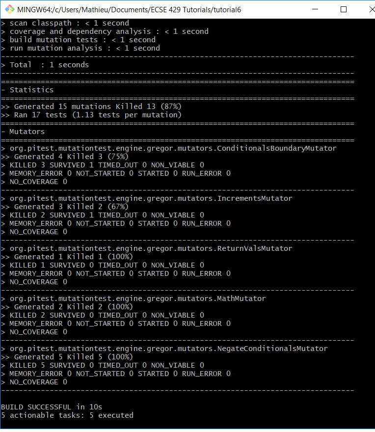 -
In your projects root folder, open the file
./build/reports/pitests/{TIMESTAMP}/index.html, then navigate to the report for theLibraryclass
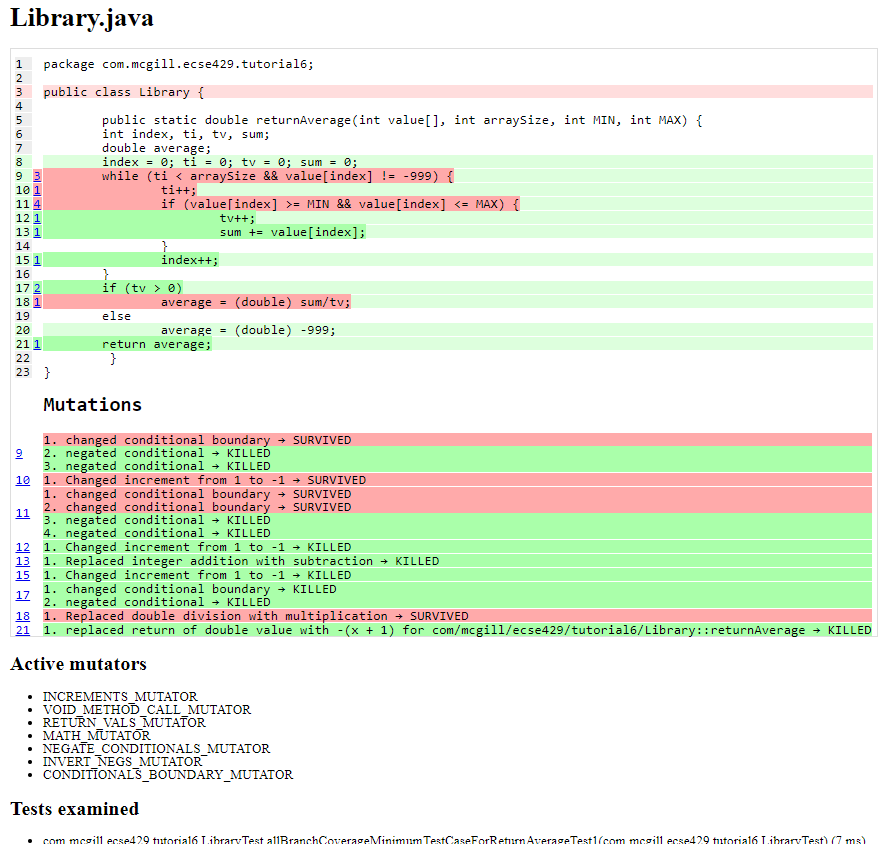NoteYou may have a different output as the one shown. This is normal as the types and number of mutants may vary each run. -
Look at the reports and get familiar with it.
We can see the code coverage, the location where the mutations took place, the mutations themselves, the types of mutators and the test suite used to assess mutation score. -
From the ouput above, we update the test cases
The test cases are not killing all mutants due to not checkingvalue[index] == MINandvalue[index] == MAXconditions in the boundary. A similar problem occurs forti == arraySizein the while loop.LibraryTest.javanow contains:package com.mcgill.ecse429.tutorial6; import static org.junit.Assert.assertEquals; import org.junit.Test; public class LibraryTest { @Test public void allBranchCoverageMinimumTestCaseForReturnAverageTest1() { int[] value = {5, 25, 10, 20, -999}; int AS = 5; int min = 10; int max = 20; double average = Library.returnAverage(value, AS, min, max); assertEquals(15, average, 0.1); } @Test public void allBranchCoverageMinimumTestCaseForReturnAverageTest2() { int[] value = {}; int AS = 0; int min = 10; int max = 20; double average = Library.returnAverage(value, AS, min, max); assertEquals(-999.0, average, 0.1); } } -
Rerun pit mutation with
gradle build pitestand reopen the outputted reportindex.html

-
After the second run, we see that the line
ti++;inside the while loop is useless and a code smell!
6.3. Configuring PIT testing
-
To understand the different mutants, you can go here.
-
You can customize the plugin in the
builde.gradlefile using all the parameters for the command line.
Reference: http://pitest.org/quickstart/commandline/ -
For example, we can specify the mutators we want in
build.gradle:... pitest { targetClasses = ["com.mcgill.ecse429.tutorial6*"] timestampedReports = true mutators=['NEGATE_CONDITIONALS','CONDITIONALS_BOUNDARY'] } ...
6.4. Using PIT in Eclipse
-
Go to Help > Eclipse Marketplace

-
Type pit in the search box and find Pitclipse

-
Restart your Eclipse after the installation is successful
-
You can now executet the tests in
LibraryTestclass by selecting Pit Mutation Test from the available run configurations.NoteIf you get a NullPointerExceptionfor the first run, try re-running it.
-
Check the output in the console for where the report is generated.
 Note
NoteThe output of the report should be identical to the one we generated with the Gradle plugin
7. Integration Testing
7.1. Testing Using Mocks
-
Clone (or fork and clone the fork of) the initial project from this link and import it to Android Studio.
-
Open the project with Android Studio and verify that it builds fine from the IDE (or by running the corresponding Gradle wrapper).
-
Explore the (not too complex) application sources. Start the app and try its features as well.
-
Add the Mockito gradle dependency in
app/build.gradlefor compiling test sources:testImplementation 'org.mockito:mockito-core:2.23.0' -
In the same
build.gradlefile, add to theandroidtasktestOptions { unitTests.returnDefaultValues = true } -
Locate the
ExampleUnitTest.javaand refactor the class' name toIntegrationTest.
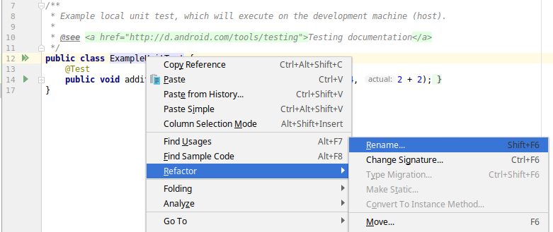 -
Add the following code to the class:
package ca.mcgill.ecse321.eventregistration; import com.loopj.android.http.AsyncHttpClient; import com.loopj.android.http.BlackholeHttpResponseHandler; import com.loopj.android.http.RequestParams; import org.junit.Before; import org.junit.Test; import org.mockito.Mock; import org.mockito.Mockito; public class IntegrationTest { @Mock AsyncHttpClient httpClient; HttpUtils httpUtils; @Before public void setUp(){ httpUtils = new HttpUtils(httpClient); } @Test public void testHttpPostCalled() { String url = "participants/"; RequestParams params = new RequestParams(); BlackholeHttpResponseHandler handler = new BlackholeHttpResponseHandler(); // Call the SUT httpUtils.post(url, params, handler); // Verify interactions Mockito.verify(httpClient).post(HttpUtils.getBaseUrl() + url, params, handler); } } -
Run the test as JUnit test (failure is expected). Try understanding the error message!
-
Add the following annotation to the test class.
// ... other imports import org.junit.runner.RunWith; import org.mockito.junit.MockitoJUnitRunner; @RunWith(MockitoJUnitRunner.class) public class IntegrationTest { // ... }
7.2. Local UI Tests
-
Add the following to the module’s
build.gradlefile within theandroidtaskandroid { testOptions { unitTests { includeAndroidResources = true } } // ... other settings } -
In this same Gradle file, add/verify dependencies
testImplementation 'junit:junit:4.12' testImplementation 'org.mockito:mockito-core:2.23.0' testImplementation 'org.robolectric:robolectric:4.0' -
Create a new test class
LocalUITestwithin thesrc/test/javadirectory in packageca.mcgill.ecse321.eventregistrationpackage ca.mcgill.ecse321.eventregistration; import com.loopj.android.http.AsyncHttpClient; import com.loopj.android.http.RequestParams; import com.loopj.android.http.ResponseHandlerInterface; import org.junit.Rule; import org.junit.Test; import org.junit.runner.RunWith; import org.mockito.Mock; import org.mockito.Mockito; import org.mockito.junit.MockitoJUnit; import org.mockito.junit.MockitoRule; import org.robolectric.Robolectric; import org.robolectric.RobolectricTestRunner; @RunWith(RobolectricTestRunner.class) public class LocalUITest { @Rule public MockitoRule mockitoRule = MockitoJUnit.rule(); @Mock public AsyncHttpClient httpClient; @Test public void aTest() { MainActivity mainActivity = Robolectric.setupActivity(MainActivity.class); mainActivity.setHttpUtils(new HttpUtils(httpClient)); mainActivity.addParticipant(null); Mockito.verify(httpClient).post(Mockito.anyString(),Mockito.<RequestParams>any(),Mockito.<ResponseHandlerInterface>any()); } } -
Run it as a local test.
7.3. Android Instrumentation Tests
With Android, we have previously created Local tests that that run on your local machine only. In this tutorial we show how you can create Instrumented tests, unit tests that run on an Android device or emulator. See more about the difference between local and instrumentation tests at: https://developer.android.com/training/testing/unit-testing/.
7.3.1. Project dependencies and setup
This section takes configurations from the Android documentation. You can follow the steps below by reusing the example project from the first step of the previous section.
-
Add the used libraries to
<module-name>/src/main./AndroidManifest.xmlwithin the<application>…</application>tags<uses-library android:name="android.test.base" android:required="false" /> <uses-library android:name="android.test.runner" android:required="false" /> <uses-library android:name="android.test.mock" android:required="false" />
The next few steps will update the module’s build.gradle file (<module-name>/build.gradle file).
-
Speficy the used libraries within the
androidtask as well.android { // ... other settings useLibrary 'android.test.runner' useLibrary 'android.test.base' useLibrary 'android.test.mock' // ... other settings } -
Add the following instrumentation testing dependencies.
dependencies { // ... other dependencies // Core library androidTestImplementation 'androidx.test:core:1.0.0' // AndroidJUnitRunner and JUnit Rules androidTestImplementation 'androidx.test:runner:1.1.0' androidTestImplementation 'androidx.test:rules:1.1.0' // Assertions androidTestImplementation 'androidx.test.ext:junit:1.0.0' androidTestImplementation 'androidx.test.ext:truth:1.0.0' androidTestImplementation 'com.google.truth:truth:0.42' // Espresso dependencies androidTestImplementation 'androidx.test.espresso:espresso-core:3.1.0' androidTestImplementation 'androidx.test.espresso:espresso-contrib:3.1.0' androidTestImplementation 'androidx.test.espresso:espresso-intents:3.1.0' androidTestImplementation 'androidx.test.espresso:espresso-accessibility:3.1.0' androidTestImplementation 'androidx.test.espresso:espresso-web:3.1.0' // Add these for applications having significant library dependencies androidTestImplementation 'com.google.dexmaker:dexmaker:1.2' // Android-specific Mockito androidTestImplementation 'com.google.dexmaker:dexmaker-mockito:1.2:' }NoteFor instrumentation tests only Mockito 1.9.x can be used currently (via the dexmaker dependency). -
Update the
androidtask as shown below. You may need to download the new SDK version.android { compileSdkVersion 28 // ... defaultConfig { minSdkVersion 18 targetSdkVersion 28 testInstrumentationRunner "androidx.test.runner.AndroidJUnitRunner" } // ...
7.3.2. Creating an instrumentation test
-
Create the
<module-name>/src/androidTest/javafolder structure. This is the default location where the framework will look for instrumentation tests. -
Create a new test class
InstrumentationTestunder the same package name as the package name of the main activity.
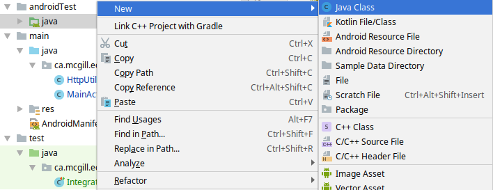

-
Add the imports and annotations as follows
package ca.mcgill.ecse321.eventregistration; import android.widget.Button; import android.widget.ListView; import com.loopj.android.http.AsyncHttpClient; import com.loopj.android.http.JsonHttpResponseHandler; import com.loopj.android.http.RequestParams; import com.loopj.android.http.ResponseHandlerInterface; import org.json.JSONArray; import org.json.JSONException; import org.json.JSONObject; import org.junit.Rule; import org.junit.Test; import org.junit.runner.RunWith; import org.mockito.Mock; import org.mockito.Mockito; import org.mockito.invocation.InvocationOnMock; import org.mockito.runners.MockitoJUnitRunner; import org.mockito.stubbing.Answer; import androidx.test.filters.SmallTest; import androidx.test.rule.ActivityTestRule; import static com.google.common.truth.Truth.assertThat; @RunWith(MockitoJUnitRunner.class) @SmallTest public class InstrumentationTest { }NoteIf you are not planning on using Mockito with instrumentation tests, you can replace the @RunWith(MockitoJUnitRunner.class)annotation with@RunWith(AndroidJUnit4.class). -
Within this class, create a private class that passes the JSON answer for a HTTP request via the handler (JSON Handler) extracted from the method call
private class ParticipantsAnswer implements Answer<JSONArray> { @Override public Object answer(InvocationOnMock invocation) throws JSONException { Object[] arguments = invocation.getArguments(); JsonHttpResponseHandler h = (JsonHttpResponseHandler) arguments[2]; h.onSuccess(200,null,new JSONArray() .put(new JSONObject().put("name", "P1")) .put(new JSONObject().put("name", "P2")) .put(new JSONObject().put("name", "P3"))); return null; } } -
Add fields to the
InstrumentationTestclass@Mock AsyncHttpClient httpClient; @Rule public ActivityTestRule<MainActivity> activityTestRule = new ActivityTestRule<>(MainActivity.class); -
Add the implementation to the test case
@Test public void aTest() throws Throwable { final MainActivity mainActivity = activityTestRule.getActivity(); mainActivity.setHttpUtils(new HttpUtils(httpClient)); Mockito.when(httpClient.get(Mockito.anyString(),Mockito.<RequestParams>anyObject(), Mockito.<ResponseHandlerInterface>anyObject())).thenAnswer(new ParticipantsAnswer()); final ListView participantList = mainActivity.findViewById(R.id.participant_list); final int numberOfParticipants = participantList.getAdapter().getCount(); assertThat(numberOfParticipants).isEqualTo(0); Button button = (Button) mainActivity.findViewById(R.id.button); button.performClick(); int numberOfParticipants2 = participantList.getAdapter().getCount(); assertThat(numberOfParticipants2).isEqualTo(3); } -
After right clicking on the class you can run the instrumentation test. Select the virtual device to run the tests on.
-
The tests failed. Try understanding the error message!
-
Fix the tests by including the last part of the test in
runOnUiThread()activityTestRule.runOnUiThread(new Runnable() { @Override public void run() { Button button = (Button) mainActivity.findViewById(R.id.button); button.performClick(); int numberOfParticipants2 = participantList.getAdapter().getCount(); assertThat(numberOfParticipants2).isEqualTo(3); } }); -
Finally, exploit the Fluent API of Mockito and clean up your code. Import all static methods with
static import!
8. Android User Interface Tests
This tutorial shows how you can create UI tests using instrumentation testing with the Robotium framework.
-
Clone the initial Android project from here and import it to Android Studio.
-
Add the following dependency to the
appmoduledependencies { // ... other dependencies implementation 'com.jayway.android.robotium:robotium-solo:5.2.1' } -
Create the
<module-name>/src/androidTest/javafolder structure. -
Create a new test class
RobotiumTestunder the same package name as the package name of the main activity. (In the figure the class name does not match.)
-
Add the initial implementation of the Robotium test class
package ca.mcgill.ecse321.eventregistration; import android.test.ActivityInstrumentationTestCase2; import android.widget.EditText; import com.robotium.solo.Solo; public class RobotiumTest extends ActivityInstrumentationTestCase2<MainActivity> { private Solo solo; private static final String LAUNCHER_ACTIVITY_FULL_CLASSNAME = "ca.mcgill.ecse321.eventregistration.MainActivity"; private static Class<?> launcherActivityClass; static { try { launcherActivityClass = Class.forName(LAUNCHER_ACTIVITY_FULL_CLASSNAME); } catch (ClassNotFoundException e) { throw new RuntimeException(e); } } @SuppressWarnings("unchecked") public RobotiumTest() throws ClassNotFoundException { super((Class<MainActivity>) launcherActivityClass); } private String participantName; private String testParticipantName = "TestParticipant"; @Override public void setUp() throws Exception { super.setUp(); solo = new Solo(getInstrumentation()); int uniqueId = 1586; // Ensure uniqueness of name participantName = "Participant" + uniqueId; getActivity(); } @Override public void tearDown() throws Exception { solo.finishOpenedActivities(); super.tearDown(); } } -
Add a test case to see if registration succeeds
public void testRegisterSucceeds() throws InterruptedException { solo.waitForActivity("MainActivity", 2000); EditText editText = solo.getEditText("Who?"); solo.enterText(editText,participantName); solo.clickOnText(solo.getString(R.string.newparticipant_button)); boolean errorTextFound = solo.waitForText("exception", 1, 5000); assertFalse(errorTextFound); } -
Create a participant named TestParticipant by issuing a POST request to https://eventregistration-backend-123.herokuapp.com/participants/TestParticipant
# Add a participant called TestParticipant to the database curl -X POST https://eventregistration-backend-123.herokuapp.com/participants/TestParticipant # Make sure participant was added by issuing a get request curl GET https://eventregistration-backend-123.herokuapp.com/participants/ -
Add a test case to see if registration fails if the participant is already in the database
public void testRegisterFails() throws InterruptedException { solo.waitForActivity("MainActivity", 2000); EditText editText = solo.getEditText("Who?"); solo.enterText(editText,testParticipantName); solo.clickOnText(solo.getString(R.string.newparticipant_button)); boolean errorTextFound = solo.waitForText("exception", 1, 5000); assertTrue(errorTextFound); } -
Add a test case to see if the list of participant contains the existing participant "TestParticipant"
public void testListRefreshes() { solo.clickOnText(solo.getString(R.string.refresh_participant_list)); boolean textFound = solo.waitForText(testParticipantName, 1, 5000, true); assertTrue(textFound); } -
Start the Robotium Instrumentation Test on seleted device
8.1. Running Android Emulator on Travis-CI
Instrumentation tests require a runtime Android. This means Travis needs to run one instance during the build to successfully execute tests. You can use the following example configuration for getting started on how to run an emulator on Travis-CI: https://gist.github.com/harmittaa/7d3c51041ffd0e54cda9807e95593309
9. Acceptance Testing
This tutorial shows how you can write acceptance test using the Cucumber tool in a Behaviour-Driven Development approach.
-
Clone the initial Android project from here and import it to Android Studio
-
Install the Gherkin plugin for Android Studio
Click on File > Settings > Plugins > Browse Repositories
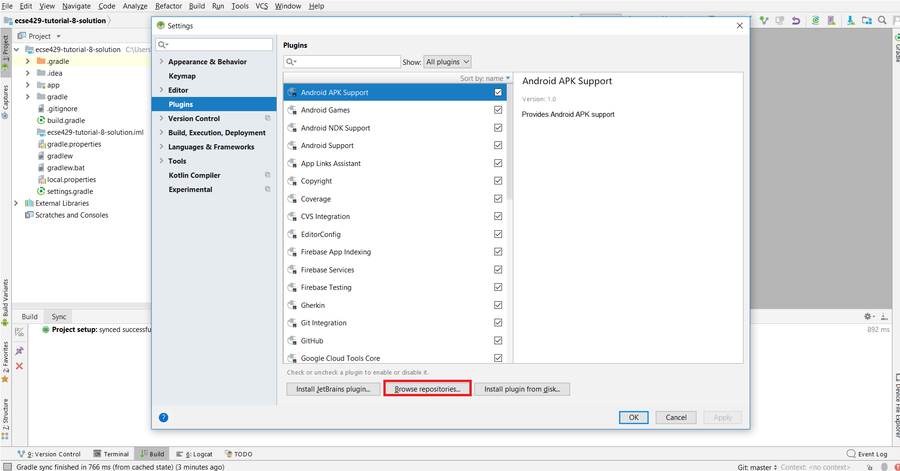 -
Type Gherkin in search box, install it and restard Android Studio.
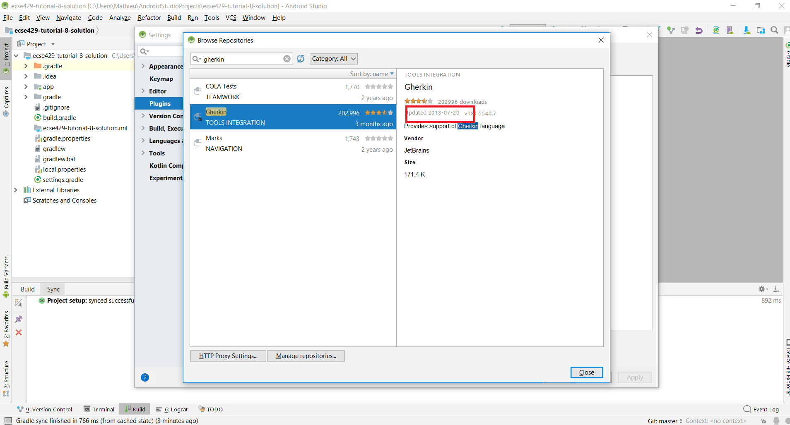 -
Under
androidTestfolder, create a new folder structureandroidTest/assets/features
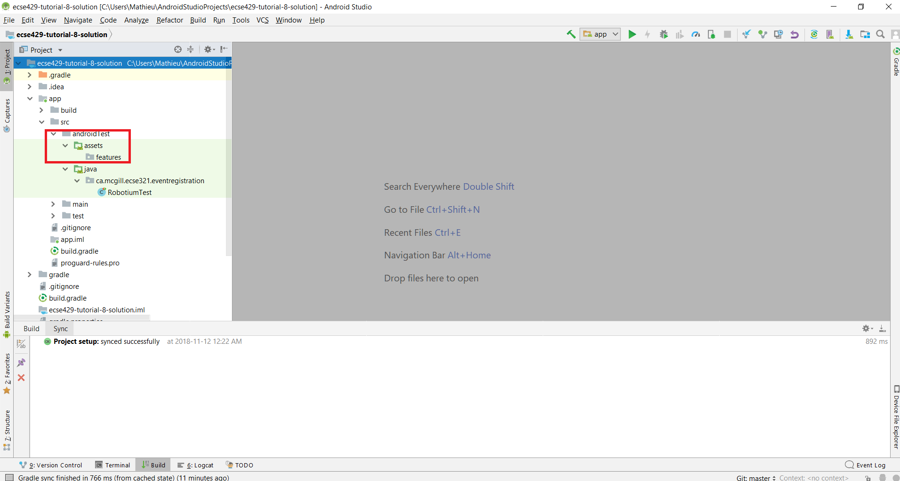 -
Add a new file called
addParticipant.featurein the features folderFeature: Add a participant Add a test participant to the main activity Scenario Outline: Add new participant to the main activity Given I have a MainActivity When I input username <username> in text field 'Who?' And I press 'Add Participant' button When I click on the 'Refresh Participant List' button Then I should see <see> in the list Examples: | username | see | | some_random_guy_1 | some_random_guy_1 | | some_random_guy_2 | some_random_guy_2 | | some_random_guy_3 | some_random_guy_3 | -
Add the following lines to the app’s
build.gradlefile within theandroidtagsandroid { // ... defaultConfig { // ... testInstrumentationRunner "ca.mcgill.ecse321.eventregistration.test.Instrumentation" // ... } // ... sourceSets { androidTest { assets { assets.srcDirs = ['src/androidTest/assets'] } java { java.srcDirs = ['src/androidTest/java'] } } } // ... compileOptions { // ... sourceCompatibility = '1.8' targetCompatibility = '1.8' // ... } } -
Add the following lines in
dependenciessectiondependencies { // ... //Runner androidTestImplementation( 'com.android.support.test:runner:0.4.1' ){ exclude module: 'junit' } androidTestImplementation 'io.cucumber:cucumber-junit:3.0.2' androidTestImplementation group: 'io.cucumber', name: 'cucumber-android', version: '3.0.2' androidTestImplementation 'io.cucumber:cucumber-picocontainer:3.0.2' androidTestImplementation group: 'io.cucumber', name: 'cucumber-jvm', version: '3.0.2', ext: 'pom' androidTestImplementation 'io.cucumber:cucumber-core:3.0.2' androidTestImplementation 'io.cucumber:cucumber-jvm-deps:1.0.6' // ... }NoteFor convenience, below is the full specification of the app.gradlefileapply plugin: 'com.android.application' android { compileSdkVersion 28 defaultConfig { applicationId "ca.mcgill.ecse321.eventregistration" minSdkVersion 18 targetSdkVersion 28 versionCode 1 versionName "1.0" testInstrumentationRunner "ca.mcgill.ecse321.eventregistration.test.Instrumentation" } buildTypes { release { minifyEnabled false proguardFiles getDefaultProguardFile('proguard-android.txt'), 'proguard-rules.pro' } } useLibrary 'android.test.runner' useLibrary 'android.test.base' useLibrary 'android.test.mock' sourceSets { androidTest { assets { assets.srcDirs = ['src/androidTest/assets'] } java { java.srcDirs = ['src/androidTest/java'] } } } compileOptions { sourceCompatibility = '1.8' targetCompatibility = '1.8' } } dependencies { implementation fileTree(dir: 'libs', include: ['*.jar']) implementation 'com.android.support:appcompat-v7:28.0.0' implementation 'com.android.support.constraint:constraint-layout:1.1.3' implementation 'com.android.support:design:28.0.0' testImplementation 'junit:junit:4.12' implementation 'com.loopj.android:android-async-http:1.4.9' implementation 'com.jayway.android.robotium:robotium-solo:5.2.1' //Runner androidTestImplementation( 'com.android.support.test:runner:0.4.1' ){ exclude module: 'junit' } androidTestImplementation 'io.cucumber:cucumber-junit:3.0.2' androidTestImplementation group: 'io.cucumber', name: 'cucumber-android', version: '3.0.2' androidTestImplementation 'io.cucumber:cucumber-picocontainer:3.0.2' androidTestImplementation group: 'io.cucumber', name: 'cucumber-jvm', version: '3.0.2', ext: 'pom' androidTestImplementation 'io.cucumber:cucumber-core:3.0.2' androidTestImplementation 'io.cucumber:cucumber-jvm-deps:1.0.6' } -
Sync after making the changes to the
app.gradlefile -
Delete the current implementation of
RobotiumTestin thejavafolder -
Refactor or create a new package named
ca.mcgill.ecse321.eventregistration.testunderandroidTest/java -
Create a new class named
Instrumentationin theca.mcgill.ecse321.eventregistration.testpackage with the following codepackage ca.mcgill.ecse321.eventregistration.test; import android.os.Bundle; import cucumber.api.android.CucumberInstrumentationCore; import android.support.test.runner.AndroidJUnitRunner; public class Instrumentation extends AndroidJUnitRunner { private final CucumberInstrumentationCore instrumentationCore = new CucumberInstrumentationCore(this); @Override public void onCreate(Bundle arguments) { super.onCreate(arguments); instrumentationCore.create(arguments); } @Override public void onStart() { waitForIdleSync(); instrumentationCore.start(); } } -
Create a new class named
CucumberRunnerin theca.mcgill.ecse321.eventregistration.testpackage with the following codepackage ca.mcgill.ecse321.eventregistration.test; import cucumber.api.CucumberOptions; @CucumberOptions(features = "features", glue = {"ca.mcgill.ecse321.eventregistration.test"}, monochrome = true, plugin = { "pretty"} ) public class CucumberRunner { } -
Create a new class
CucumberStepsagain in the`ca.mcgill.ecse321.eventregistration.test. Your file structure should look like
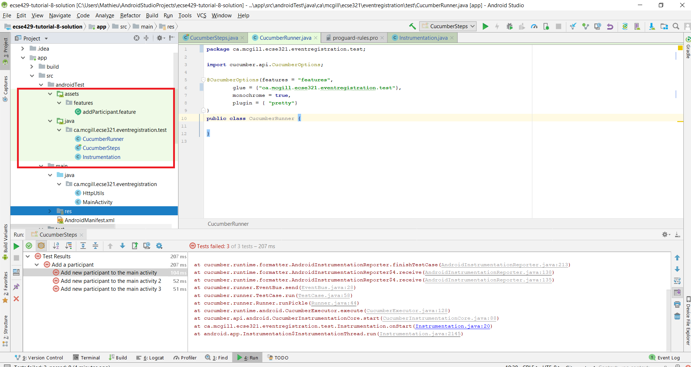 -
Add initializing code to
CucumberStepspackage ca.mcgill.ecse321.eventregistration.test; import android.test.ActivityInstrumentationTestCase2; import com.robotium.solo.Solo; import ca.mcgill.ecse321.eventregistration.MainActivity; public class CucumberSteps extends ActivityInstrumentationTestCase2<MainActivity> { private Solo solo; private static final String LAUNCHER_ACTIVITY_FULL_CLASSNAME = "ca.mcgill.ecse321.eventregistration.MainActivity"; private static Class<?> launcherActivityClass; static { try { launcherActivityClass = Class.forName(LAUNCHER_ACTIVITY_FULL_CLASSNAME); } catch (ClassNotFoundException e) { throw new RuntimeException(e); } } public CucumberSteps() throws ClassNotFoundException { super((Class<MainActivity>) launcherActivityClass); } @Override public void setUp() throws Exception { super.setUp(); } @Override public void tearDown() throws Exception { solo.finishOpenedActivities(); getActivity().finish(); super.tearDown(); } } -
Run the tests under
CucumberSteps. Take a look at the logs for the test failures
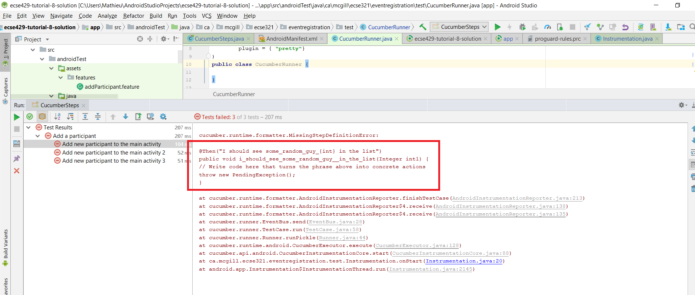 -
Add the following code to
CucumberStepsto finish writing the tests// ================================== Test Implementation ======================================================= @Given("I have a MainActivity") public void i_have_a_MainActivity() throws Exception { solo = new Solo(getInstrumentation()); getActivity(); } @When("I input username some_random_guy_{int} in text field {string}") public void i_input_username_some_random_guy__in_text_field(Integer int1, String string) { solo.waitForActivity("MainActivity", 2000); String username = "some_random_guy" + int1; EditText editText = solo.getEditText(string); solo.enterText(editText, username); } @When("I press {string} button") public void i_press_button(String buttonName) { solo.waitForActivity("MainActivity", 2000); //click on button solo.clickOnText(buttonName); //make sure no error has been made boolean errorTextFound = solo.waitForText("exception", 1, 5000); assertFalse(errorTextFound); } @When("I click on the {string} button") public void i_click_on_the_button(String buttonName) { solo.waitForActivity("MainActivity", 2000); //click on button solo.clickOnText(buttonName); } @Then("I should see some_random_guy_{int} in the list") public void i_should_see_some_random_guy__in_the_list(Integer int1) { solo.waitForActivity("MainActivity", 2000); String expectedAddedParticipant = "some_random_guy" + int1; boolean textFound = solo.waitForText(expectedAddedParticipant, 1, 5000, true); assertTrue(textFound); } -
Finally, rerun the tests under
CucumberSteps

-
Under the Logcat tab you can filter the view to see the output of Cucumber
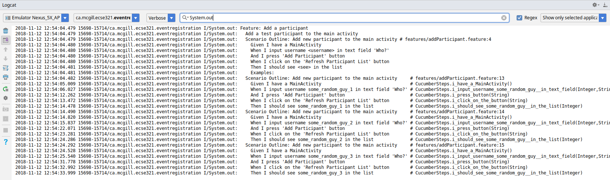
10. Model-based Testing
10.1. GraphWalker
For reference, the main documentation for GraphWalker is accessible at http://graphwalker.github.io/.
10.2. Setting up GraphWalker
-
Download the Latest stable standalone CLI (3.4.2) jar file from here.
-
We assume that the
GRAPHWALKERenvironment variable points to the jarfile (e.g., it points to/home/user/graphwalker-cli-3.4.2.jar). See its help by runningjava -jar $GRAPHWALKER --help
10.3. Creating a test model
We are going to create a test model using the online UMPLE tool.
-
Insert the following example state machine code describing the possible states of a shuttler and insert it into the text editor (example taken from here)
class TrackShuttler { sm { initializing { readyToGo -> transferringLoad; } transferringLoad { loaded -> shuttling; } shuttling { reachEnd -> transferringLoad; moving { nearEnd -> braking; accelerating { reachedMaxSpeed -> coasting; } coasting { tooSlow -> accelerating; } braking { tooSlow -> coasting; } } || controllingLights { lightsOn { daylightDetected -> lightsOff; } lightsOff { darknessDetected -> lightsOn; } } } } }
-
Take a look what code is generated by the tool based on the statechart!
-
Using the yEd tool, create the flattened version of the state machine
 Note
NoteYou can download the resulting graphml from here
10.4. Test generation
-
Use the GraphWalker tool to generate a test sequence based on your criteria. For example, to generate full vertex coverage by applying a random walk strategy, use
java -jar $GRAPHWALKER offline --model shuttler.graphml "random(vertex_coverage(100))" --start-element v_InitializingOutput:
{"currentElementName":"v_Initializing"} {"currentElementName":"e_readyToGo"} {"currentElementName":"v_TransferingLoad"} {"currentElementName":"e_loaded"} {"currentElementName":"v_lightsOn_accelerating"} {"currentElementName":"e_daylightDetected"} {"currentElementName":"v_lightsOff_accelerating"} {"currentElementName":"e_reachEnd"} {"currentElementName":"v_TransferingLoad"} {"currentElementName":"e_loaded"} {"currentElementName":"v_lightsOn_accelerating"} {"currentElementName":"e_nearEnd"} {"currentElementName":"v_lightsOn_braking"} {"currentElementName":"e_daylightDetected"} {"currentElementName":"v_lightsOff_braking"} {"currentElementName":"e_tooSlow"} {"currentElementName":"v_lightsOff_coasting"} {"currentElementName":"e_tooSlow"} {"currentElementName":"v_lightsOff_accelerating"} {"currentElementName":"e_reachEnd"} {"currentElementName":"v_TransferingLoad"} {"currentElementName":"e_loaded"} {"currentElementName":"v_lightsOn_accelerating"} {"currentElementName":"e_daylightDetected"} {"currentElementName":"v_lightsOff_accelerating"} {"currentElementName":"e_darknessDetected"} {"currentElementName":"v_lightsOn_accelerating"} {"currentElementName":"e_reachedMaxSpeed"} {"currentElementName":"v_lightsOn_coasting"}TipUse the jq tool to prettify the output of the test generator. Pipe the results:
GRAPHWALKER_COMMAND | jq -r .currentElementName -
Experiment with other setting, such as creating a test case from one node to another node with A* traversal! See more here.